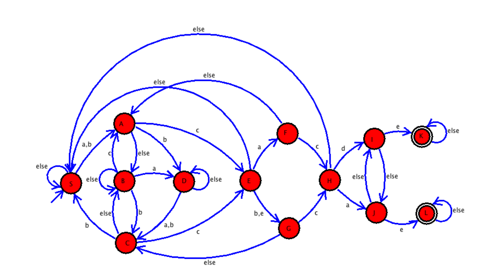
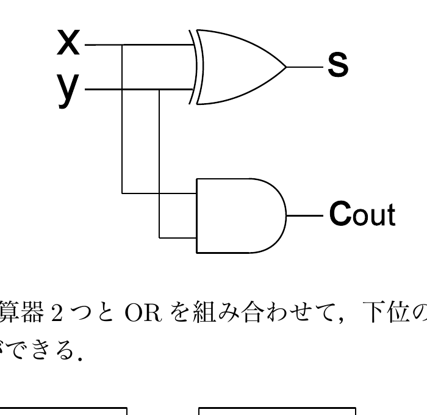
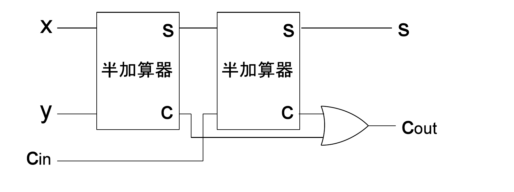

田中哲朗クラス（理科一類7,23,25組）｜7月28日（木）4限
以下の図のオートマトン（有限状態機械）はa〜eの文字がそれぞれ書かれた5つのボタンを持つ電子錠をモデル化したものである。初期状態は状態Sとする。矢印の上に書かれた文字a〜eはその文字の書かれた電子錠のボタンが押されることに対応する。elseは「他の文字すべて」を表す。二重丸で表される状態K,Lは終了状態である。これは電子錠が解錠されている状態に対応する。

先に構造を一望しておく。各状態からの遷移をすべてまとめると次のようになっている。
| 状態 | a | b | c | d | e |
|---|---|---|---|---|---|
| S（開始） | A | A | S | S | S |
| A | B | D | E | B | B |
| B | D | C | A | B | B |
| C | B | S | E | B | B |
| D | C | C | E | D | D |
| E | F | G | S | S | G |
| F | A | A | H | A | A |
| G | C | C | H | C | C |
| H | J | S | S | I | S |
| I | J | J | J | J | K（終了） |
| J | I | I | I | I | L（終了） |
| K（終了） | K | K | K | K | K |
| L（終了） | L | L | L | L | L |
H以降、Iで"d"・Jで"a"を読んでからさらに"e"を読むとそれぞれK・Lに到達して解錠する。逆にたどると、解錠に至る「本線」は S→A→E→F→H→J→L（"acbcae"に相当する経路の一部）と、S→A→D→C→E→G→H→I→K（別の経路）のように、複数の道筋が合流・分岐する構造になっている。実際にこの機械は、「acbcde」または「acbcae」のいずれかのパスワードが、途中で打ち間違いを挟んでも、最終的に正しく続けて入力されれば解錠するという、複数パスワードを同時に検出するオートマトンである。文字列検索でよく使われる「複数パターンを同時にマッチさせる」オートマトン（Aho–Corasick法などが用いる考え方）と同種の構成であり、各状態は「これまでに入力した文字列が、2つのパスワードのうちどこまで正しく先頭一致しているか」という情報を表している。
次の入力に対して、電子錠が解錠されるかどうか（Yes/No）を答えよ。
| 入力 | 結果 |
|---|---|
| （無し） | No |
| ac | No |
| acbc | No |
| acbcd | No |
| acbcde | Yes |
| acbcdea | Yes |
| (a) bcacabe | ? |
| (b) bccacde | ? |
| (c) acacacacac | ? |
| (d) bbacbcaadec | ? |
| (e) cabaaccacaee | ? |
上の遷移表に従って、各入力を1文字ずつ追跡する。
(a) bcacabe：S \(\xrightarrow{b}\) A \(\xrightarrow{c}\) E \(\xrightarrow{a}\) F \(\xrightarrow{c}\) H \(\xrightarrow{a}\) J \(\xrightarrow{b}\) I \(\xrightarrow{e}\) K。最終状態はK（終了状態）。→ Yes
(b) bccacde：S \(\xrightarrow{b}\) A \(\xrightarrow{c}\) E \(\xrightarrow{c}\) S \(\xrightarrow{a}\) A \(\xrightarrow{c}\) E \(\xrightarrow{d}\) S \(\xrightarrow{e}\) S。最終状態はS（開始状態のまま）。→ No
(c) acacacacac：S \(\xrightarrow{a}\) A \(\xrightarrow{c}\) E \(\xrightarrow{a}\) F \(\xrightarrow{c}\) H \(\xrightarrow{a}\) J \(\xrightarrow{c}\) I \(\xrightarrow{a}\) J \(\xrightarrow{c}\) I \(\xrightarrow{a}\) J \(\xrightarrow{c}\) I。最終状態はI（終了状態ではない）。→ No
(d) bbacbcaadec：S \(\xrightarrow{b}\) A \(\xrightarrow{b}\) D \(\xrightarrow{a}\) C \(\xrightarrow{c}\) E \(\xrightarrow{b}\) G \(\xrightarrow{c}\) H \(\xrightarrow{a}\) J \(\xrightarrow{a}\) I \(\xrightarrow{d}\) J \(\xrightarrow{e}\) L \(\xrightarrow{c}\) L。最終状態はL（終了状態）。→ Yes
(e) cabaaccacaee：S \(\xrightarrow{c}\) S \(\xrightarrow{a}\) A \(\xrightarrow{b}\) D \(\xrightarrow{a}\) C \(\xrightarrow{a}\) B \(\xrightarrow{c}\) A \(\xrightarrow{c}\) E \(\xrightarrow{a}\) F \(\xrightarrow{c}\) H \(\xrightarrow{a}\) J \(\xrightarrow{e}\) L \(\xrightarrow{e}\) L。最終状態はL（終了状態）。→ Yes
次のように途中まで文字を入力して、途中で入力を間違えてしまった。この後、電子錠を解錠するために必要な最小の追加入力の長さと、その長さで解錠できる入力パターンをすべて挙げよ。
| これまでの入力 |
|---|
| (f) cab |
| (g) aa |
| (h) bcad |
| (i) acbb |
| (j) bb |
まず、各状態から終了状態(K/L)に至る最短距離を調べておくと見通しがよい。H以降の「本線」は、H \(\xrightarrow{d}\) I \(\xrightarrow{e}\) K、H \(\xrightarrow{a}\) J \(\xrightarrow{e}\) L の2文字であり、E以降は E \(\to\{F,G\}\)（1文字）\(\to\) H（"c"で1文字）\(\to\{I,J\}\)（1文字）\(\to\{K,L\}\)（"e"で1文字）の合計4文字で、Eから見て2文字目・4文字目の選び方に応じて{cacde, cacae, cbcde, cbcae, cecde, cecae}の6通りが最短4文字パターンとなる（Eで"a"→F、"b"または"e"→Gの3通り、Hで"d"→I、"a"→Jの2通りの組み合わせ）。
(f) cab：S \(\xrightarrow{c}\) S \(\xrightarrow{a}\) A \(\xrightarrow{b}\) D。最終状態はD。DからEへは"c"の1文字（D\(\xrightarrow{c}\)E）で到達するので、Dから解錠までは \(1+4=5\)文字。5: {cacde, cacae, cbcde, cbcae, cecde, cecae}
(g) aa：S \(\xrightarrow{a}\) A \(\xrightarrow{a}\) B。最終状態はB。BからEへは2文字を要し、しかも3通りの経路がある：B\(\xrightarrow{c}\)A\(\xrightarrow{c}\)E、B\(\xrightarrow{a}\)D\(\xrightarrow{c}\)E、B\(\xrightarrow{b}\)C\(\xrightarrow{c}\)E（いずれも"?c"の形で2文字目が"c"、1文字目がa/b/cの3通り）。ここから先はEからの最短4文字（6通り）が続くので、合計\(2+4=6\)文字、パターン数は\(3\times6=18\)通り。6: ccacde, ccacae, ccbcde, ccbcae, ccecde, ccecae, acacde, acacae, acbcde, acbcae, acecde, acecae, bcacde, bcacae, bcbcde, bcbcae, bcecde, bcecae（計18通り）
(h) bcad：S \(\xrightarrow{b}\) A \(\xrightarrow{c}\) E \(\xrightarrow{a}\) F \(\xrightarrow{d}\) A。最終状態はA。AからEへは"c"の1文字（A\(\xrightarrow{c}\)E）なので、Aから解錠までは\(1+4=5\)文字。5: {cacde, cacae, cbcde, cbcae, cecde, cecae}
(i) acbb：S \(\xrightarrow{a}\) A \(\xrightarrow{c}\) E \(\xrightarrow{b}\) G \(\xrightarrow{b}\) C。最終状態はC。CからEへも"c"の1文字（C\(\xrightarrow{c}\)E）なので、Cから解錠までは\(1+4=5\)文字。5: {cacde, cacae, cbcde, cbcae, cecde, cecae}
(j) bb：S \(\xrightarrow{b}\) A \(\xrightarrow{b}\) D。最終状態はD（(f)と同じ状態）。5: {cacde, cacae, cbcde, cbcae, cecde, cecae}
この電子錠は13個の状態を持つが、機能（どの入力列に対して解錠するかという振る舞い）を変えずに、もっと少ない数の状態で実現できる。何個の状態で実現できるか示せ。
2つの状態が「統合可能」なのは、それらが将来のどんな入力列を与えても常に同じ結果（解錠するかしないか、そしてその後の遷移の仕方）を返す場合である。状態K,Lを見ると、どちらも「a〜eのどの入力に対しても自分自身に留まる」という完全に同一の振る舞いをしており、いずれも一度到達すればそれ以降は永久に解錠状態のままである。つまりK,Lは将来のどの入力列に対しても常に同じ結果（常にYes、常に自己ループ）を返すという意味で機能的に等価であり、1つの状態に統合できる。
そこでK,Lを1つの吸収状態Mにまとめる。Iの"e"遷移とJの"e"遷移をともにMへの遷移とし、Mはa〜eのすべてでMに留まる自己ループとすればよい。これにより状態数は13から12に減らせる。
| 状態 | a | b | c | d | e |
|---|---|---|---|---|---|
| I | J | J | J | J | M（終了） |
| J | I | I | I | I | M（終了） |
| M（終了） | M | M | M | M | M |
他の状態S〜Jについては、これ以上の統合は容易ではない。たとえば見かけの似ているAとCを統合できるか考えてみると、Aは"b"を読むとDに進むのに対しCは"b"を読むとSに戻ってしまい、その先の振る舞い（Dはさらに"c"でEへ一直線に進めるが、Sは"a","b"でAに戻るだけで解錠に近づかない）が異なる。つまりAとCは、直後に同じ"b"を入力しても解錠可能性に差が生じるため区別が必要であり、統合できない。S〜Jの各状態は、それぞれ「2つのパスワードのどこまで一致しているか」という異なる情報を保持しており、将来の入力によって異なる結果をもたらす可能性がある以上、これ以上まとめることはできない。
下図は1ビットの2進数どうしの加算を行う半加算器（half adder）である。入力$x,y$に対して、和のビット$s$と桁上げ（キャリー）$c_{out}$を出力する。

半加算器を2つとORゲート1個を組み合わせると、下位の桁からの繰り上がり$c_{in}$も考慮した1ビット全加算器（full adder）を作ることができる。

1ビット全加算器の真理値表を書きなさい。
図の回路構成に従うと、$t=\text{XOR}(x,y)$（1つ目の半加算器の和出力）、$s=\text{XOR}(t,c_{in})$（2つ目の半加算器の和出力）、$c_{out}=\text{OR}(\text{AND}(x,y),\ \text{AND}(t,c_{in}))$（2つの半加算器それぞれの桁上げをORで合成）である。これに従って$x,y,c_{in}$の全8通りを計算すると次の表になる。
| $x$ | $y$ | $c_{in}$ | $s$ | $c_{out}$ |
|---|---|---|---|---|
| 0 | 0 | 0 | 0 | 0 |
| 0 | 0 | 1 | 1 | 0 |
| 0 | 1 | 0 | 1 | 0 |
| 0 | 1 | 1 | 0 | 1 |
| 1 | 0 | 0 | 1 | 0 |
| 1 | 0 | 1 | 0 | 1 |
| 1 | 1 | 0 | 0 | 1 |
| 1 | 1 | 1 | 1 | 1 |
出力変数$s$と$c_{out}$をそれぞれ入力変数$x,y,c_{in}$の加算標準形（積和標準形）で表しなさい。
真理値表で出力が1になる行それぞれについて、その行を満たすミンターム（各変数を、値が1ならそのまま、0なら否定にしてANDしたもの）を作り、それらをORでつなげばよい。
$s=1$になる行は$(x,y,c_{in})=(0,0,1),(0,1,0),(1,0,0),(1,1,1)$の4つなので、
$c_{out}=1$になる行は$(x,y,c_{in})=(0,1,1),(1,0,1),(1,1,0),(1,1,1)$の4つなので、
なお、後ろ2項は$xy\,\overline{c_{in}}+xy\,c_{in}=xy(\overline{c_{in}}+c_{in})=xy$とまとめられ、簡略化すると次の多数決関数の形になる（標準形としては上の4項のミンターム和が答えだが、参考として付記する）。
$$c_{out} = xy + yc_{in} + xc_{in}$$NANDは単独で完備性を持つので、NANDだけから1ビット全加算器を作ることができる。なるべく少ない数のNANDを用いて1ビット全加算器を作成し、MIL記法で表しなさい。
$s=x\oplus y\oplus c_{in}$と$c_{out}=xy+yc_{in}+xc_{in}$（多数決関数）を、標準的な「9個のNANDによる全加算器」構成で実現する。XORは4個のNANDで作れる：$n_1=\text{NAND}(x,y)$、$n_2=\text{NAND}(x,n_1)$、$n_3=\text{NAND}(y,n_1)$、$t=\text{NAND}(n_2,n_3)$とすると$t=x\oplus y$になる（ここまで4個）。同じ4個のNANDの構成を$t,c_{in}$に対してもう一段適用する：$m_1=\text{NAND}(t,c_{in})$、$m_2=\text{NAND}(t,m_1)$、$m_3=\text{NAND}(c_{in},m_1)$、$s=\text{NAND}(m_2,m_3)$とすると$s=t\oplus c_{in}=x\oplus y\oplus c_{in}$になる（ここまで8個）。
残るは$c_{out}$。すでに使った$n_1=\overline{xy}$と$m_1=\overline{t\cdot c_{in}}$を再利用して、9個目のNANDを$c_{out}=\text{NAND}(n_1,m_1)$とすると、$c_{out}=\overline{n_1\cdot m_1}=\overline{\overline{xy}\cdot\overline{t\,c_{in}}}=xy+t\,c_{in}$（ド・モルガン）となる。ここで$t=x\oplus y$なので$c_{out}=xy+(x\oplus y)c_{in}$——これは(1)の図の回路（$c_{out}=\text{OR}(\text{AND}(x,y),\text{AND}(t,c_{in}))$）と全く同じ式であり、正しく$c_{out}$を計算している。
検算（$x=1,y=1,c_{in}=0$、真理値表より$s=0,c_{out}=1$のはず）：$n_1=\overline{1}=0$、$n_2=\text{NAND}(1,0)=1$、$n_3=\text{NAND}(1,0)=1$、$t=\text{NAND}(1,1)=0$。$m_1=\text{NAND}(0,0)=1$、$m_2=\text{NAND}(0,1)=1$、$m_3=\text{NAND}(0,1)=1$、$s=\text{NAND}(1,1)=0$ ✓。$c_{out}=\text{NAND}(n_1,m_1)=\text{NAND}(0,1)=1$ ✓。
個別問題1(3)のオートマトンの状態統合（K,Lを1つの状態Mにまとめて13状態を12状態にする）と、個別問題2(3)の「NANDだけで全加算器を作る」というこの問題は、見た目は全く異なるが、どちらも「外から見た振る舞い（機能）を変えずに、内部の構成要素をできるだけ減らす・統一する」という、情報科学・電子工学に共通する最適化の発想に基づいている。オートマトンでは「将来のどんな入力に対しても同じ結果を返す状態」を1つにまとめ、論理回路では「複数の素子（AND,OR,NOT,XOR）を、より少ない種類（NANDのみ）の素子の組み合わせで置き換える」。
NANDが単独で完備性（universal gate）を持つのは、NOT,AND,ORのすべてがNANDだけから作れるからである：$\text{NOT}(x)=\text{NAND}(x,x)$、$\text{AND}(x,y)=\text{NAND}(\text{NAND}(x,y),\text{NAND}(x,y))$（NANDの出力をもう一度NOTする）、$\text{OR}(x,y)=\text{NAND}(\text{NOT}(x),\text{NOT}(y))$（ド・モルガンの法則$x+y=\overline{\overline{x}\cdot\overline{y}}$による）。この3つがあれば任意の論理関数（真理値表）が積和標準形として組めるため、NANDだけでどんな組合せ回路も——今回の全加算器も——実現できる。